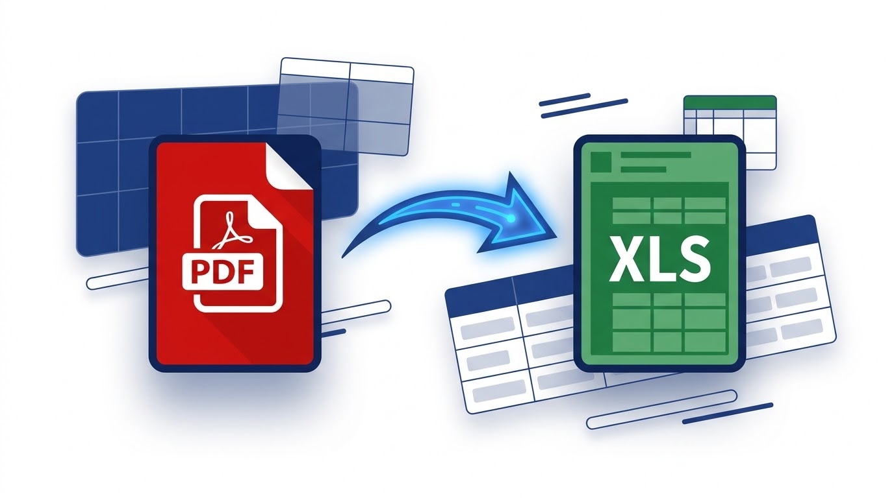

PDF to Excel
Extract tables and text from PDF into editable Excel (.xlsx) files. 100% browser-based — your files never leave your device.
Drop your PDF file here
or click to browse · PDF supported · Max 25 MB
Processing…
Why use DocEasy for PDF to Excel?
- 100% private — files never leave your device
- Real .xlsx files, opens in Excel or Sheets
- Each PDF page becomes a worksheet
- Free forever — no signup required
How to Convert PDF to Excel: Complete Guide
PDFs are great for sharing tables because they lock the layout in place. But that same lock makes it almost impossible to work with the data — you cannot sort a column, run a formula, or update a number without retyping everything. Converting a PDF to Excel solves this. It turns a locked table into a real spreadsheet you can edit, filter, and analyze.
The DocEasy PDF to Excel tool runs entirely in your browser. Your PDF is never uploaded to any server, which makes it one of the safest ways to convert financial reports, invoices, and confidential data.

Why Convert PDF to Excel?
PDF is a presentation format. It preserves the look of a table but removes the underlying data structure. Once a table is inside a PDF, each cell is just a piece of text floating at a specific position on the page. There is no row, no column, no cell reference — just letters and numbers on a canvas.
An Excel spreadsheet is the opposite. Each value lives in a cell with a real address (A1, B2, C3). You can sort it, filter it, apply formulas, create charts, and share it with someone who will do the same. When you convert a PDF table to Excel, you get back the structure that was lost.
Common reasons to convert a PDF to Excel include:
- Financial reports: Turn a PDF balance sheet into a spreadsheet for analysis.
- Invoices and bills: Extract line items into Excel for accounting.
- Bank statements: Pull transactions into a spreadsheet for budgeting.
- Research data: Convert published tables into data you can analyze.
- Inventory lists: Turn a PDF product list into an editable inventory sheet.
- Sales reports: Extract monthly numbers into Excel for charting.
Step-by-Step: How to Use the PDF to Excel Tool
- Upload Your PDF File: Drag and drop your
.pdffile onto the upload zone, or click "Choose PDF File" to browse. Files up to 25 MB are supported. - Automatic Table Detection: The tool reads your PDF using PDF.js and analyzes the horizontal positions of text. Items on the same line with a gap between them are treated as separate columns.
- Row and Column Grouping: Lines at the same vertical position become a row. Items separated by a wide gap become different cells in that row.
- Excel Generation: The structured data is packaged into a real .xlsx file — one worksheet for each page of the PDF — using the same Office Open XML format that Microsoft Excel creates.
- Download Instantly: Your .xlsx file is created as a Blob and downloaded straight to your device.
- Open in Excel or Sheets: Double-click the file to open it in Microsoft Excel, Google Sheets, LibreOffice Calc, or any other spreadsheet app.
What Kind of PDFs Work Best?
- Well-spaced tables: Tables with clear gaps between columns, generated from Word, Excel, or a layout tool.
- Financial statements: Balance sheets, income statements, and cash flow summaries with aligned numbers.
- Simple invoices: Line-item tables with clear columns.
- Product catalogs: Lists of items with prices in aligned columns.
- Data exports: PDFs created directly from a database or spreadsheet.
Understanding the Limitations
This tool uses positional text analysis, not machine learning. That means:
- Simple tables convert well: Columns with even spacing are detected correctly.
- Wide gaps are important: If two columns are very close together, they may be merged into one cell.
- Merged cells are not detected: Excel-style merged cells are treated as normal text.
- Multi-line cells are tricky: A cell that wraps onto two lines may become two rows.
- Scanned PDFs are not supported: If your PDF is an image of a page, there is no text to extract. You need OCR for that, which this tool does not perform.
- Images and charts are ignored: Only text is extracted, not embedded images.
For simple, well-spaced tables — which covers the vast majority of financial reports and invoices — the output is clean and immediately usable. For complex layouts, expect to do a bit of cleanup in Excel after the conversion.
Privacy First — Always
Everything runs in your browser. Your PDF is never uploaded to any server. There is no account to create, no email to verify, and no file sitting in a remote database. When you close the tab, the file is gone from memory. This makes DocEasy suitable for sensitive documents like bank statements, tax returns, invoices, and internal reports.
Tips for the Best Results
- Use a text-based PDF — not a scanned one — for the cleanest output.
- Keep your file under 25 MB for the fastest conversion.
- After conversion, open the .xlsx in Excel and check the column alignment. Most simple tables need only minor tweaks.
- For PDFs with very wide tables, expect some columns to be merged. Split the table into smaller PDFs if needed.
- Always keep a copy of the original PDF, in case you need to re-extract data later.
- If you only need to see the numbers, use our PDF to Word tool — it gives you a text version without needing Excel.
Frequently Asked Questions
Is the PDF to Excel converter free?
Yes. DocEasy is completely free with no signup, no fees, and no hidden limits.
Are my files uploaded to your servers?
No. Everything runs inside your browser. Your PDF never leaves your device.
Will the tables be perfectly preserved?
Simple, well-spaced tables convert accurately. Complex layouts with merged cells, tight columns, and multi-line cells may need manual cleanup in Excel.
Can I convert a scanned PDF?
Scanned PDFs are images of pages, not real text. This tool does not perform OCR, so text cannot be extracted from scanned PDFs.
How are multiple pages handled?
Each page of the PDF becomes a separate worksheet in the Excel file, so you can work with one page's data at a time.
Does it work on mobile?
Yes. DocEasy works on any modern browser — desktop, tablet, or smartphone — with no app install required.
Try It Now
Ready to convert your PDF into an editable Excel spreadsheet? Scroll up and drop your file into the upload zone. The whole process takes just a few seconds, and your .xlsx file will be ready to download immediately. If you find this tool useful, share it with friends and colleagues.